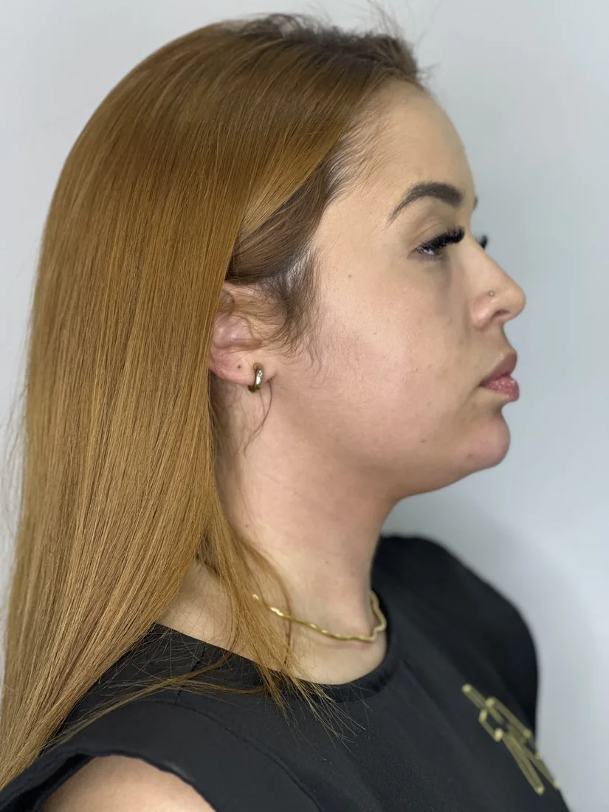
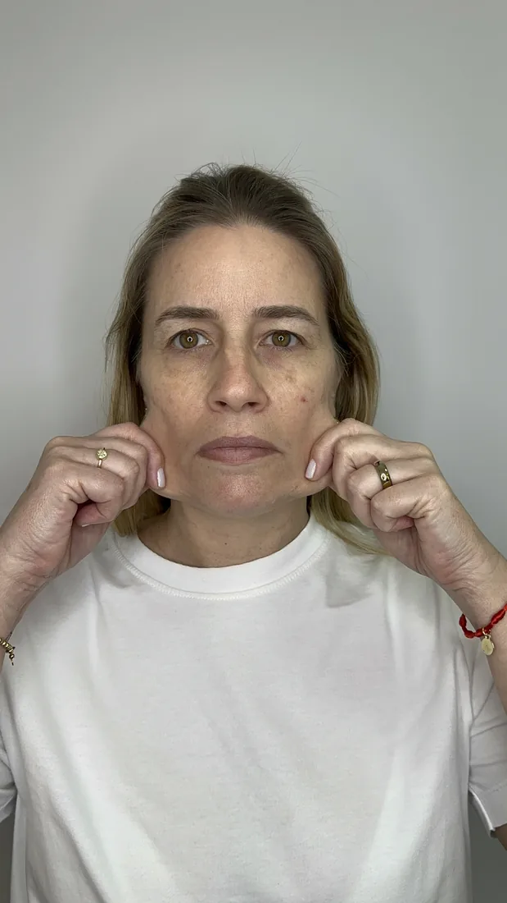
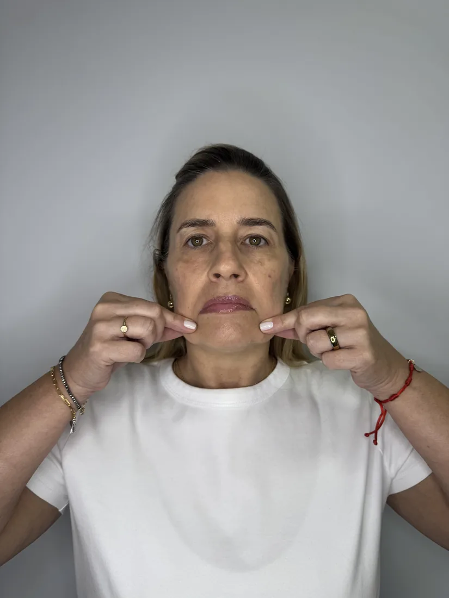

Recovery Facial
Perda de Sustentação
Reposicionamento sutil das estruturas do rosto, tratando o aspecto “derretido” e devolvendo o contorno jovem sem deformar suas expressões.
Recupere a firmeza e a sustentação perdidas com o tempo. Conheça o método exclusivo da Dra. Omara para eliminar o aspecto envelhecido, estimulando o seu próprio colágeno de forma sutil, segura e 100% fiel à sua identidade.
Resultados discretos e elegantes. O melhor procedimento é aquele que valoriza você sem que ninguém note o que foi feito.

Reposicionamento sutil das estruturas do rosto, tratando o aspecto “derretido” e devolvendo o contorno jovem sem deformar suas expressões.
Suavização milimétrica de sulcos profundos e olheiras, eliminando a fisionomia abatida e resgatando um olhar leve e revigorado.


Estímulo profundo das células para devolver a densidade, o viço e a firmeza da pele, suavizando rugas de forma totalmente natural.
Preencha seus dados abaixo. Nossa equipe entrará em contato para reservar um momento exclusivo para desenhar o planejamento ideal para as necessidades do seu rosto.
Especialista em Harmonização Facial e Gerenciamento de Pele.
Com mais de 20 anos de experiência dedicados à estética avançada, a Dra. Omara construiu sua autoridade baseada no respeito absoluto à identidade de cada paciente. Afastando-se de modismos industriais ou exageros padronizados, ela defende que o verdadeiro rejuvenescimento nasce de uma avaliação minuciosa e de tratamentos contínuos. Sua sólida formação técnica garante a segurança de procedimentos de alto valor, unindo ciência de ponta a um atendimento humanizado e exclusivo na Zona Sul de São Paulo.
Essa preocupação é muito comum, e o resultado depende exclusivamente do planejamento. O objetivo da clínica nunca é mudar o seu rosto ou congelar suas expressões, mas sim valorizar sua beleza natural através de técnicas que estimulam o seu próprio colágeno, garantindo um resultado leve, elegante e sutil.
Não trabalhamos com a venda de procedimentos isolados ou contagem de seringas. Você compra um planejamento completo de gerenciamento de pele e rejuvenescimento estruturado para o seu biotipo, focado em saúde, durabilidade e elegância.
Com certeza. Nosso público ideal são mulheres maduras que apreciam a discrição. O foco é fazer com que as pessoas percebam que você está mais bonita, revigorada e descansada, sem aquele aspecto artificial de quem “parou numa clínica de estética”.